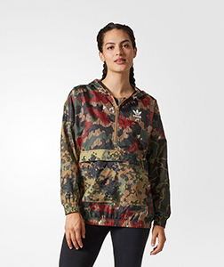
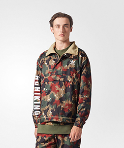
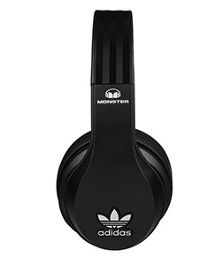
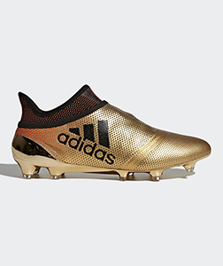

When Adidas started up, though it was just a small firm, it had aimed at the world market. Therefore, during its early period, Adidas had regarded products technology innovation as its motivation to explore market and enhance brand awareness. « Function always the first » and « Giving athletes the best » is the principle of the corporate brand development. The brothers split up in 1947, with Rudi forming a new firm that he called Ruda– from Rudolf Dassler, later rebranded Puma, and Adi forming a company formally registered as Adidas AG from Adi Dassler on 18 August 1949. Adidas clothing and sports shoes are usually with three-parallel designs, which is also characteristic of adidas. « Adidas is all in » is the current global marketing strategy for Adidas. The slogan aims to tie all brands and labels together, presenting a unified image to consumers interested in sports, fashion, street, music and pop culture. « Impossible is Nothing » was the previous mainstream marketing slogan for Adidas.

Inspired by the scenic views and relaxed attitude of L.A.'s nature hiking culture, Pharrell Williams created the Hu Hiking collection to blend retro outdoor design.
Covered in mixed camouflage prints, this women's windbreaker is made of plain weave with a signature Hu Hiking graphic across the back.

The laid-back hiking culture of Los Angeles inspired Pharrell to create his Hu Hiking collection, a playful blend of retro and modern outdoor design.
Covered in an allover camouflage print, this men's windbreaker is made of plain weave with cozy fleece lining. It shows off a signature Hu Hiking.

Over-the-ear designWith comfortable ear cushions allows use during long trips and other extended listening sessions. Advanced noise isolationHelps minimize.
Apple ControlTalk cableAllows use with compatible Apple audio devices and features a tangle-free design for neat storage.

Ignite the game. Burn past defenders. Push the pace beyond belief. Fast as fire, gone like smoke, X explodes down the line and goalwards. Lace up and light up.
These featherweight football boots have a one-piece Techfit compression upper for quick moves into and out of the box. The Non Stop Grip texture.